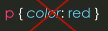
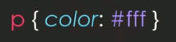
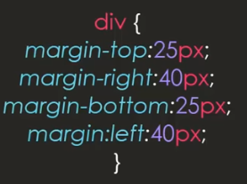
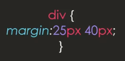
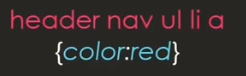
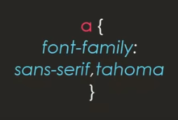
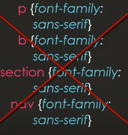
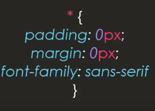
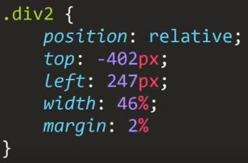

Este apartado se trata de un listado de los errores más comunes realizados por aprendices a la hora de desarrollar diseños en CSS.
Erroes
-
No usar exadcimal o RGB para definr los colores
En CSS una de las forma de definri los colores es utilizando el nombre del respectivo color, sin embargo esto no es recomendable ya que cada navegador tiene puede tener configuado un color diferente a sociado a esa palabra clave.
Por lo tanto si bien todos los nevagadores aplicaran el mismo color la tonalidad de este puede bariar en cada uno, en algunos casos llegando a ser bastene notorio, lo que resultaria en que los diseños de la paguina se alteren segun desde cual navegador se ingrese.
Por ello lo mejor es utilizar los formatos exadecimal, RGB o inncluso RGBa (incluye opacidad) para definir los colores, ya que son formatos estandarizados en todos los navegadores.
Incorrecto
Correcto
Correcto

-
No utilizar las shorthand propieties
Estas se tratan de propiedades con la función de simplificar el codigo permitiendo que se definan barios parametros a la vez.
Por ejemplo, la propiedad marguin esta permite definir el efecto de:
Margin top: Margen superior
Margin right: Matguen derecho
Margin bottom: Marguen inferior
Margin left: Marguen izquierdo
De ese modo se puede reducir el numero de lineas de codigo simplificando el propyecto y hhaciendolo más facil de mantener y leer.
Incorrecto
Correcto
Nota: Es muy recomendable buscar todos los tipos de shorthand propieties en google.
-
Selectores mal espesificados
A lahora de aplicar los selectores de una clase lo mejor es no utilizar selectores de más de dos clases, ya que no es necesario ser exesibamente espesifico a la hora de definirlos, a su vez tampoco se debe de ser muy poco espesifico como para aplicar los estilos a otros elemetos que no debeia.
Error
Correcto
-
No definir fuentes parecidas
A la hora de definir las fuentes de una paguina lo mas recomendable es definri dos fuentes, una principal que sera la predilecta y una segundaria similar para utilizar en caso de que no se pueda acceder a la fuente primaria.
Error consiste en que las dos fuentes seleccionadas sean diferentes o con notorias diferencias, ya que lo mejor es que estas sean similares para mantener la estructura y estilos de la paguina.
Ejemplo
 -
No aplicar los estilos generales
Un error seria el definir repetidamete una propiedad para multiples elemetos, para esos casos lo mejor es simplemte declararla como una propiedad global en vez de asignarla a cada elemento.
Si se presenta la necesidad de que algun elemento posea un valor diferente en estas propiedades allí si es correcto el definir la propiedad para equel elemeto en espesifico.
Error
Correcto
 -
No posicionar correctamente los elemetos
En CSS existen dibersas formas de posicionar los elemetos, sin embargo algunas formas son más optimas que otras, en espesifico lo más recomendable es posicionar los elemetos utilizando Grid o FlexBox, ya que son actualmte los recursos más eficientes y potentes que ofrece CSS para posicionar elemetos.
Incorrecto
Correcto
Resultado de ambos codigos

-
No Diseñar el proyecto como Responsive Desing
Actualmte es esencial para toda paguina web el poder adaptarse a los dibersos tipos de dispositivos, por ello este tipo de planteamiento es sumamate importante actualmente, a su vez esto es conseguido utilizando Grid o FlexBox en conjunto con @media Query.
Correcto